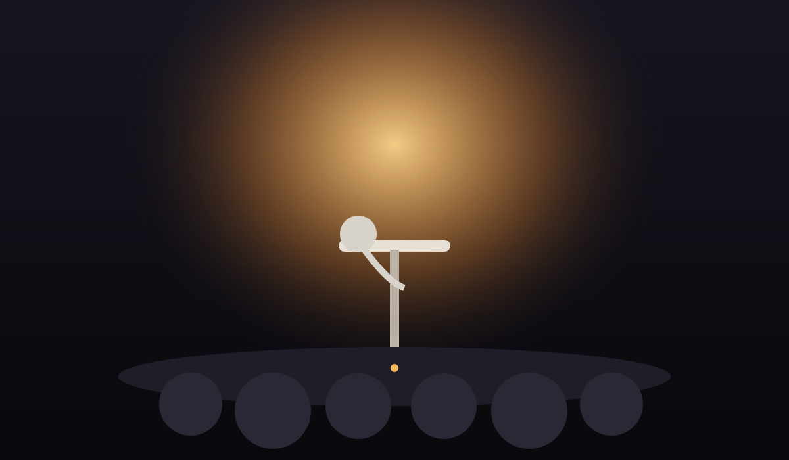
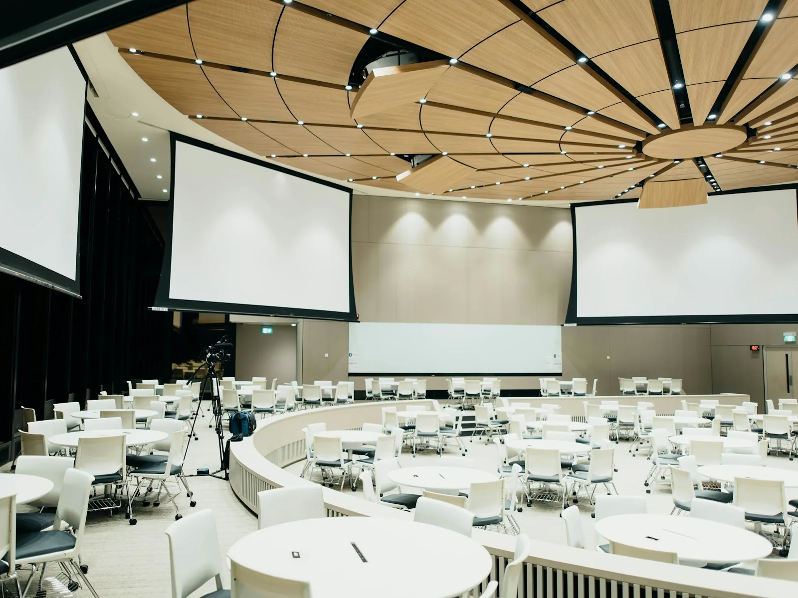

01
HEADLINE
Friday Headliner
Touring headliner + two featured comics

COMEDY CLUB · LIVE SHOWS · OPEN MIC
France Sire is rebuilt around live comedy: real show categories, ticket planning, open mic, groups, food & drinks and private events.
THIS WEEK
Every card is built like a comedy-club event: time, audience, format and ticket price.
THE ROOM
Instead of pretending France Sire is a giant concert hall, the redesigned site focuses on the intimacy of a comedy room: arrival, seating, stage visibility, show pacing and post-show flow.
Plan your visitSHOW TYPES
Main-stage comedy nights with featured support acts.
Curated multi-comic nights with varied voices and shorter sets.
Short sets, first timers, regulars and works-in-progress.
Improv, roast-style shows, clean comedy and one-off concepts.
OPEN MIC
The old site treated comedy like a booking package. This version adds a dedicated performer flow with sign-up expectations, check-in, set length and conduct placeholders.
See open mic flowFOOD & DRINKS
A venue menu should answer what is available, not distract from the comedy.

PRIVATE EVENTS
FAQ
The prototype uses reserved sections rather than exact seat numbers. Final seating rules should be replaced with the venue’s real policy.
Each show card lists a sample age policy. Verify the real minimum age before launch.
This prototype does not claim a mandatory minimum. Add a verified minimum only if the real venue has one.
A 30–45 minute arrival window before showtime is a practical sample recommendation; replace it with the actual door policy.
Group requests for 8+ can use the Group Bookings page so seating can be planned together.
NEXT SHOW
Pick a show, check the policy, and plan the night with a clear guest flow.